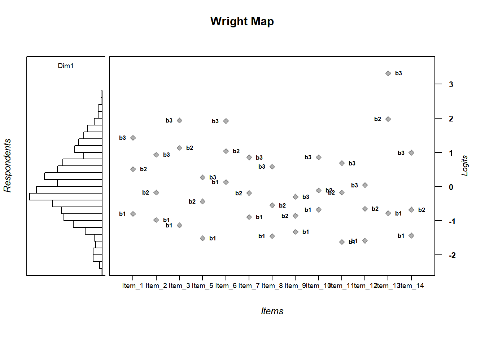
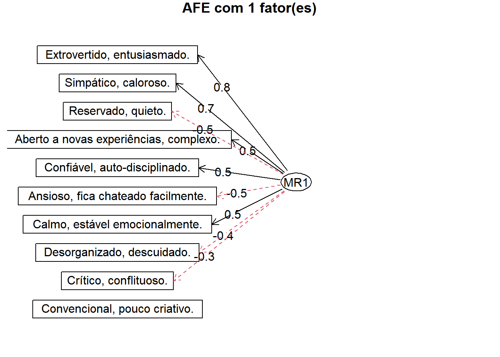

library(psych)Estudos e Aprofundamentos II - 2024.2
Portfólio de Atividades Realizadas em Aula
Como utilizar este documento
Este documento serve como um portfólio que registra as atividades realizadas em sala de aula na disciplina Estudos e Aprofundamentos II do Mestrado em Psicologia do PPG Psicologia da UFMS, ofertada no segundo semestre de 2024. Alunos da disciplina podem utilizá-lo como um guia para elaborar seus próprios portfólios, além de acessar recursos úteis para o desenvolvimento de habilidades no R.
O documento está estruturado em formato de blog, organizado cronologicamente de forma decrescente. Cada entrada de data inclui subtítulos que identificam as atividades realizadas naquele dia. Para facilitar a navegação, utilize o menu disponível. O professor redigiu os registros em primeira pessoa, simulando a perspectiva de um estudante da disciplina que está documentando suas experiências em um diário. Este documento será atualizado semanalmente pelo professor.
17 de outubro de 2024
Na aula de hoje, fizemos uma revisão do que estudamos até o momento por meio da análise de um banco de dados com respostas ao instrumento Ten-Item Personality Inventory (TIPI). Esse banco contém respostas de estudantes de diferentes turmas do professor.
Atividade
Abra o banco de dados
Ten-Item Personality Inventory-(TIPI) (respostas).xlsxno seu projeto no R. O banco está disponível em https://docs.google.com/spreadsheets/d/1PI1oWW-PUHb9hRSlv9rAMyAsEmyqNRrL/edit?usp=sharing&ouid=118205451649792182527&rtpof=true&sd=trueQual a estrutura do objeto criado com o banco de dados? Garanta que ele esteja no formato de
data frame.Quais os nomes das variáveis no banco?
Para cada fator do Big Five, quais são os pares de itens?
Qual a média, a mediana e o desvio-padrão de cada variável?
Qual o total e o percentual de dados faltosos para cada variável?
Elabore um histograma para cada variável.
Há presença de outliers? Faça uma inspeção visual criando um boxplot para cada variável.
Quais as correlações entre todo os pares possíveis de variáveis (com exceção de
Carimbo de data/hora)? Apresente a matriz de correlações, o mapa de calor e os paineis de pares de variáveis.Considerando a teoria do Big Five, avalie a qualidade do instrumento
Ten-Item Personality Inventory-(TIPI). Ele parece ser bom para avaliar os cinco fatores? As correlações entre as variáveis se comportaram conforme esperado teoricamente?Suas respostas devem ser em formato de texto corrido e mais detalhadas o possível. Lembre que o objetivo é que o portfólio sirva de guia para você no futuro. Não deixe nenhuma atividade para trás, nenhuma análise sem explicação e nenhum código sem comentários.
03 de outubro de 2024
Nessa aula estudamos correlações, usando o banco de dados bfi disponível no pacote psych.
Carregando o psych
O pacote psych já foi instalado em 26 de setembro de 2024.
Abrindo o banco bfi do pacote psych
data(bfi)
head(bfi) A1 A2 A3 A4 A5 C1 C2 C3 C4 C5 E1 E2 E3 E4 E5 N1 N2 N3 N4 N5 O1 O2 O3 O4
61617 2 4 3 4 4 2 3 3 4 4 3 3 3 4 4 3 4 2 2 3 3 6 3 4
61618 2 4 5 2 5 5 4 4 3 4 1 1 6 4 3 3 3 3 5 5 4 2 4 3
61620 5 4 5 4 4 4 5 4 2 5 2 4 4 4 5 4 5 4 2 3 4 2 5 5
61621 4 4 6 5 5 4 4 3 5 5 5 3 4 4 4 2 5 2 4 1 3 3 4 3
61622 2 3 3 4 5 4 4 5 3 2 2 2 5 4 5 2 3 4 4 3 3 3 4 3
61623 6 6 5 6 5 6 6 6 1 3 2 1 6 5 6 3 5 2 2 3 4 3 5 6
O5 gender education age
61617 3 1 NA 16
61618 3 2 NA 18
61620 2 2 NA 17
61621 5 2 NA 17
61622 3 1 NA 17
61623 1 2 3 21Correlações
Correlação entre duas variáveis
cor(x = bfi$age, #variável 1: idade
y = bfi$education, #variável 2: escolaridade
use = "complete.obs", #usar apenas observações sem dados faltosos
method = "pearson") #calcular correlações de Pearson[1] 0.2421356Coeficiente de Determinação (R2)
O coeficiente de determinação, representado como R2, é uma medida estatística que indica a proporção da variação total de uma variável dependente que é explicada pelo modelo de regressão. Em termos simples, o R2 mostra o quão bem os valores previstos pelo modelo se ajustam aos dados reais. Ele varia de 0 a 1, onde:
R2=0 significa que o modelo não explica nenhuma variação nos dados.
R2=1 indica que o modelo explica toda a variação dos dados.
Por exemplo, um R2 = 0,80 indica que 80% da variação da variável dependente é explicada pelo modelo, enquanto os 20% restantes são explicados por outros fatores não incluídos no modelo.
Vale ressaltar que um R2 mais alto nem sempre significa que o modelo é melhor, pois modelos muito complexos podem ajustar-se aos dados de forma excessiva (overfitting).
# R2 é igual ao coeficiente de correlação ao quadrado
0.24 * 0.24 [1] 0.0576# Outra forma de se elevar ao quadrado
.24^2 [1] 0.0576# Para interpretar o R2 em termos percentuais, basta multiplicar o quadrado do coeficiente de correlação por 100
(.24^2)*100 [1] 5.76Itens de Abertura (O)
Para calcular as correlações dos itens de abertura do banco bfi podemos seguir os passos abaixo:
names(bfi) #ver quais são as variáveis de abertura (O) [1] "A1" "A2" "A3" "A4" "A5" "C1"
[7] "C2" "C3" "C4" "C5" "E1" "E2"
[13] "E3" "E4" "E5" "N1" "N2" "N3"
[19] "N4" "N5" "O1" "O2" "O3" "O4"
[25] "O5" "gender" "education" "age" abertura <- bfi[,21:25] #selecionamos somente as variáveis de abertura
names(abertura) #verificando se o objeto "abertura" criado está apenas com variáveis de abertura[1] "O1" "O2" "O3" "O4" "O5"options(scipen = 9999) #desligar a notação científica
#calcular as correlações de Pearson, com intervalo de confiança
ab.correl <- corr.test(abertura, #banco de dados
use = "pairwise", #tratamento de missing
method = "pearson") #método de correlação
ab.r <- ab.correl$r #matriz de correlações calculada
ab.n <- ab.correl$n #observações por pares de itens utilizadas para calcular as correlações
ab.ci <- round(ab.correl$ci,3) #intervalo de confiança com arrendondamento para 3 decimaisCorrelogramas
Na última aula vimos um tipo de correlograma chamado mapa de calor. Abaixo, além de um mapa de calor, também podemos gerar um painel com informações sobre as correlações entre os pares de variáveis. Na prática, é uma forma alternativa de representar a matriz de correlações.
Mapa de Calor
cor.plot(abertura, digits = 2, cex = 1) #correlograma de mapa de calor
Painéis de Pares de Variáveis
pairs.panels(x = abertura, method = "pearson") #correlograma
Demais fatores do banco bfi
Usando a mesma estratégia adotada para analisar as correlações dos itens de Abertura, estime as correlações de Pearson dos itens dos demais fatores:
Itens de Conscienciosidade (itens C)
Itens de Extroversão (itens E)
Itens de Amabilidade (itens A)
Itens de Neuroticismo (itens N)
26 de setembro de 2024
Nessa aula, aprendemos algumas técnicas para explorar os dados. Vamos usar o pacote psych (https://cran.r-project.org/web/packages/psych/index.html) para isso.
Instalando e carregando o psych
#instalar o pacote psych
#install.packages("psych")
#carregar o pacote psych
library(psych)Abrir o banco de dados bfi
O pacote psych vem com alguns bancos de dados que podem ser usados para treinarmos algumas habilidades de análise. Vamos usar o banco de dados bfi (Big Five Inventory).
#abrir o banco
data(bfi)
#visualizar o cabeçalho do data frame
head(bfi) A1 A2 A3 A4 A5 C1 C2 C3 C4 C5 E1 E2 E3 E4 E5 N1 N2 N3 N4 N5 O1 O2 O3 O4
61617 2 4 3 4 4 2 3 3 4 4 3 3 3 4 4 3 4 2 2 3 3 6 3 4
61618 2 4 5 2 5 5 4 4 3 4 1 1 6 4 3 3 3 3 5 5 4 2 4 3
61620 5 4 5 4 4 4 5 4 2 5 2 4 4 4 5 4 5 4 2 3 4 2 5 5
61621 4 4 6 5 5 4 4 3 5 5 5 3 4 4 4 2 5 2 4 1 3 3 4 3
61622 2 3 3 4 5 4 4 5 3 2 2 2 5 4 5 2 3 4 4 3 3 3 4 3
61623 6 6 5 6 5 6 6 6 1 3 2 1 6 5 6 3 5 2 2 3 4 3 5 6
O5 gender education age
61617 3 1 NA 16
61618 3 2 NA 18
61620 2 2 NA 17
61621 5 2 NA 17
61622 3 1 NA 17
61623 1 2 3 21Estrutura do banco de dados
#visualizar a estrutura do data frame
str(bfi)'data.frame': 2800 obs. of 28 variables:
$ A1 : int 2 2 5 4 2 6 2 4 4 2 ...
$ A2 : int 4 4 4 4 3 6 5 3 3 5 ...
$ A3 : int 3 5 5 6 3 5 5 1 6 6 ...
$ A4 : int 4 2 4 5 4 6 3 5 3 6 ...
$ A5 : int 4 5 4 5 5 5 5 1 3 5 ...
$ C1 : int 2 5 4 4 4 6 5 3 6 6 ...
$ C2 : int 3 4 5 4 4 6 4 2 6 5 ...
$ C3 : int 3 4 4 3 5 6 4 4 3 6 ...
$ C4 : int 4 3 2 5 3 1 2 2 4 2 ...
$ C5 : int 4 4 5 5 2 3 3 4 5 1 ...
$ E1 : int 3 1 2 5 2 2 4 3 5 2 ...
$ E2 : int 3 1 4 3 2 1 3 6 3 2 ...
$ E3 : int 3 6 4 4 5 6 4 4 NA 4 ...
$ E4 : int 4 4 4 4 4 5 5 2 4 5 ...
$ E5 : int 4 3 5 4 5 6 5 1 3 5 ...
$ N1 : int 3 3 4 2 2 3 1 6 5 5 ...
$ N2 : int 4 3 5 5 3 5 2 3 5 5 ...
$ N3 : int 2 3 4 2 4 2 2 2 2 5 ...
$ N4 : int 2 5 2 4 4 2 1 6 3 2 ...
$ N5 : int 3 5 3 1 3 3 1 4 3 4 ...
$ O1 : int 3 4 4 3 3 4 5 3 6 5 ...
$ O2 : int 6 2 2 3 3 3 2 2 6 1 ...
$ O3 : int 3 4 5 4 4 5 5 4 6 5 ...
$ O4 : int 4 3 5 3 3 6 6 5 6 5 ...
$ O5 : int 3 3 2 5 3 1 1 3 1 2 ...
$ gender : int 1 2 2 2 1 2 1 1 1 2 ...
$ education: int NA NA NA NA NA 3 NA 2 1 NA ...
$ age : int 16 18 17 17 17 21 18 19 19 17 ...#nomes das colunas
names(bfi) [1] "A1" "A2" "A3" "A4" "A5" "C1"
[7] "C2" "C3" "C4" "C5" "E1" "E2"
[13] "E3" "E4" "E5" "N1" "N2" "N3"
[19] "N4" "N5" "O1" "O2" "O3" "O4"
[25] "O5" "gender" "education" "age" Estatísticas Descritivas
summary(object = bfi) A1 A2 A3 A4 A5
Min. :1.000 Min. :1.000 Min. :1.000 Min. :1.0 Min. :1.00
1st Qu.:1.000 1st Qu.:4.000 1st Qu.:4.000 1st Qu.:4.0 1st Qu.:4.00
Median :2.000 Median :5.000 Median :5.000 Median :5.0 Median :5.00
Mean :2.413 Mean :4.802 Mean :4.604 Mean :4.7 Mean :4.56
3rd Qu.:3.000 3rd Qu.:6.000 3rd Qu.:6.000 3rd Qu.:6.0 3rd Qu.:5.00
Max. :6.000 Max. :6.000 Max. :6.000 Max. :6.0 Max. :6.00
NA's :16 NA's :27 NA's :26 NA's :19 NA's :16
C1 C2 C3 C4 C5
Min. :1.000 Min. :1.00 Min. :1.000 Min. :1.000 Min. :1.000
1st Qu.:4.000 1st Qu.:4.00 1st Qu.:4.000 1st Qu.:1.000 1st Qu.:2.000
Median :5.000 Median :5.00 Median :5.000 Median :2.000 Median :3.000
Mean :4.502 Mean :4.37 Mean :4.304 Mean :2.553 Mean :3.297
3rd Qu.:5.000 3rd Qu.:5.00 3rd Qu.:5.000 3rd Qu.:4.000 3rd Qu.:5.000
Max. :6.000 Max. :6.00 Max. :6.000 Max. :6.000 Max. :6.000
NA's :21 NA's :24 NA's :20 NA's :26 NA's :16
E1 E2 E3 E4
Min. :1.000 Min. :1.000 Min. :1.000 Min. :1.000
1st Qu.:2.000 1st Qu.:2.000 1st Qu.:3.000 1st Qu.:4.000
Median :3.000 Median :3.000 Median :4.000 Median :5.000
Mean :2.974 Mean :3.142 Mean :4.001 Mean :4.422
3rd Qu.:4.000 3rd Qu.:4.000 3rd Qu.:5.000 3rd Qu.:6.000
Max. :6.000 Max. :6.000 Max. :6.000 Max. :6.000
NA's :23 NA's :16 NA's :25 NA's :9
E5 N1 N2 N3
Min. :1.000 Min. :1.000 Min. :1.000 Min. :1.000
1st Qu.:4.000 1st Qu.:2.000 1st Qu.:2.000 1st Qu.:2.000
Median :5.000 Median :3.000 Median :4.000 Median :3.000
Mean :4.416 Mean :2.929 Mean :3.508 Mean :3.217
3rd Qu.:5.000 3rd Qu.:4.000 3rd Qu.:5.000 3rd Qu.:4.000
Max. :6.000 Max. :6.000 Max. :6.000 Max. :6.000
NA's :21 NA's :22 NA's :21 NA's :11
N4 N5 O1 O2 O3
Min. :1.000 Min. :1.00 Min. :1.000 Min. :1.000 Min. :1.000
1st Qu.:2.000 1st Qu.:2.00 1st Qu.:4.000 1st Qu.:1.000 1st Qu.:4.000
Median :3.000 Median :3.00 Median :5.000 Median :2.000 Median :5.000
Mean :3.186 Mean :2.97 Mean :4.816 Mean :2.713 Mean :4.438
3rd Qu.:4.000 3rd Qu.:4.00 3rd Qu.:6.000 3rd Qu.:4.000 3rd Qu.:5.000
Max. :6.000 Max. :6.00 Max. :6.000 Max. :6.000 Max. :6.000
NA's :36 NA's :29 NA's :22 NA's :28
O4 O5 gender education age
Min. :1.000 Min. :1.00 Min. :1.000 Min. :1.00 Min. : 3.00
1st Qu.:4.000 1st Qu.:1.00 1st Qu.:1.000 1st Qu.:3.00 1st Qu.:20.00
Median :5.000 Median :2.00 Median :2.000 Median :3.00 Median :26.00
Mean :4.892 Mean :2.49 Mean :1.672 Mean :3.19 Mean :28.78
3rd Qu.:6.000 3rd Qu.:3.00 3rd Qu.:2.000 3rd Qu.:4.00 3rd Qu.:35.00
Max. :6.000 Max. :6.00 Max. :2.000 Max. :5.00 Max. :86.00
NA's :14 NA's :20 NA's :223 psych::describe(x = bfi) vars n mean sd median trimmed mad min max range skew
A1 1 2784 2.41 1.41 2 2.23 1.48 1 6 5 0.83
A2 2 2773 4.80 1.17 5 4.98 1.48 1 6 5 -1.12
A3 3 2774 4.60 1.30 5 4.79 1.48 1 6 5 -1.00
A4 4 2781 4.70 1.48 5 4.93 1.48 1 6 5 -1.03
A5 5 2784 4.56 1.26 5 4.71 1.48 1 6 5 -0.85
C1 6 2779 4.50 1.24 5 4.64 1.48 1 6 5 -0.85
C2 7 2776 4.37 1.32 5 4.50 1.48 1 6 5 -0.74
C3 8 2780 4.30 1.29 5 4.42 1.48 1 6 5 -0.69
C4 9 2774 2.55 1.38 2 2.41 1.48 1 6 5 0.60
C5 10 2784 3.30 1.63 3 3.25 1.48 1 6 5 0.07
E1 11 2777 2.97 1.63 3 2.86 1.48 1 6 5 0.37
E2 12 2784 3.14 1.61 3 3.06 1.48 1 6 5 0.22
E3 13 2775 4.00 1.35 4 4.07 1.48 1 6 5 -0.47
E4 14 2791 4.42 1.46 5 4.59 1.48 1 6 5 -0.82
E5 15 2779 4.42 1.33 5 4.56 1.48 1 6 5 -0.78
N1 16 2778 2.93 1.57 3 2.82 1.48 1 6 5 0.37
N2 17 2779 3.51 1.53 4 3.51 1.48 1 6 5 -0.08
N3 18 2789 3.22 1.60 3 3.16 1.48 1 6 5 0.15
N4 19 2764 3.19 1.57 3 3.12 1.48 1 6 5 0.20
N5 20 2771 2.97 1.62 3 2.85 1.48 1 6 5 0.37
O1 21 2778 4.82 1.13 5 4.96 1.48 1 6 5 -0.90
O2 22 2800 2.71 1.57 2 2.56 1.48 1 6 5 0.59
O3 23 2772 4.44 1.22 5 4.56 1.48 1 6 5 -0.77
O4 24 2786 4.89 1.22 5 5.10 1.48 1 6 5 -1.22
O5 25 2780 2.49 1.33 2 2.34 1.48 1 6 5 0.74
gender 26 2800 1.67 0.47 2 1.71 0.00 1 2 1 -0.73
education 27 2577 3.19 1.11 3 3.22 1.48 1 5 4 -0.05
age 28 2800 28.78 11.13 26 27.43 10.38 3 86 83 1.02
kurtosis se
A1 -0.31 0.03
A2 1.05 0.02
A3 0.44 0.02
A4 0.04 0.03
A5 0.16 0.02
C1 0.30 0.02
C2 -0.14 0.03
C3 -0.13 0.02
C4 -0.62 0.03
C5 -1.22 0.03
E1 -1.09 0.03
E2 -1.15 0.03
E3 -0.47 0.03
E4 -0.30 0.03
E5 -0.09 0.03
N1 -1.01 0.03
N2 -1.05 0.03
N3 -1.18 0.03
N4 -1.09 0.03
N5 -1.06 0.03
O1 0.43 0.02
O2 -0.81 0.03
O3 0.30 0.02
O4 1.08 0.02
O5 -0.24 0.03
gender -1.47 0.01
education -0.32 0.02
age 0.56 0.21psych::describe(x = bfi, quant = c(.1, .2, .3, .4, .5, .6, .7, .8, .9)) vars n mean sd median trimmed mad min max range skew
A1 1 2784 2.41 1.41 2 2.23 1.48 1 6 5 0.83
A2 2 2773 4.80 1.17 5 4.98 1.48 1 6 5 -1.12
A3 3 2774 4.60 1.30 5 4.79 1.48 1 6 5 -1.00
A4 4 2781 4.70 1.48 5 4.93 1.48 1 6 5 -1.03
A5 5 2784 4.56 1.26 5 4.71 1.48 1 6 5 -0.85
C1 6 2779 4.50 1.24 5 4.64 1.48 1 6 5 -0.85
C2 7 2776 4.37 1.32 5 4.50 1.48 1 6 5 -0.74
C3 8 2780 4.30 1.29 5 4.42 1.48 1 6 5 -0.69
C4 9 2774 2.55 1.38 2 2.41 1.48 1 6 5 0.60
C5 10 2784 3.30 1.63 3 3.25 1.48 1 6 5 0.07
E1 11 2777 2.97 1.63 3 2.86 1.48 1 6 5 0.37
E2 12 2784 3.14 1.61 3 3.06 1.48 1 6 5 0.22
E3 13 2775 4.00 1.35 4 4.07 1.48 1 6 5 -0.47
E4 14 2791 4.42 1.46 5 4.59 1.48 1 6 5 -0.82
E5 15 2779 4.42 1.33 5 4.56 1.48 1 6 5 -0.78
N1 16 2778 2.93 1.57 3 2.82 1.48 1 6 5 0.37
N2 17 2779 3.51 1.53 4 3.51 1.48 1 6 5 -0.08
N3 18 2789 3.22 1.60 3 3.16 1.48 1 6 5 0.15
N4 19 2764 3.19 1.57 3 3.12 1.48 1 6 5 0.20
N5 20 2771 2.97 1.62 3 2.85 1.48 1 6 5 0.37
O1 21 2778 4.82 1.13 5 4.96 1.48 1 6 5 -0.90
O2 22 2800 2.71 1.57 2 2.56 1.48 1 6 5 0.59
O3 23 2772 4.44 1.22 5 4.56 1.48 1 6 5 -0.77
O4 24 2786 4.89 1.22 5 5.10 1.48 1 6 5 -1.22
O5 25 2780 2.49 1.33 2 2.34 1.48 1 6 5 0.74
gender 26 2800 1.67 0.47 2 1.71 0.00 1 2 1 -0.73
education 27 2577 3.19 1.11 3 3.22 1.48 1 5 4 -0.05
age 28 2800 28.78 11.13 26 27.43 10.38 3 86 83 1.02
kurtosis se Q0.1 Q0.2 Q0.3 Q0.4 Q0.5 Q0.6 Q0.7 Q0.8 Q0.9
A1 -0.31 0.03 1 1.0 1 2 2 2 3.0 4 5
A2 1.05 0.02 3 4.0 4 5 5 5 6.0 6 6
A3 0.44 0.02 3 4.0 4 5 5 5 5.0 6 6
A4 0.04 0.03 2 4.0 4 5 5 6 6.0 6 6
A5 0.16 0.02 3 4.0 4 4 5 5 5.0 6 6
C1 0.30 0.02 3 4.0 4 4 5 5 5.0 6 6
C2 -0.14 0.03 2 3.0 4 4 5 5 5.0 5 6
C3 -0.13 0.02 2 3.0 4 4 5 5 5.0 5 6
C4 -0.62 0.03 1 1.0 2 2 2 3 3.0 4 5
C5 -1.22 0.03 1 2.0 2 3 3 4 4.0 5 6
E1 -1.09 0.03 1 1.0 2 2 3 3 4.0 5 5
E2 -1.15 0.03 1 2.0 2 2 3 4 4.0 5 5
E3 -0.47 0.03 2 3.0 3 4 4 4 5.0 5 6
E4 -0.30 0.03 2 3.0 4 4 5 5 5.0 6 6
E5 -0.09 0.03 2 3.0 4 4 5 5 5.0 6 6
N1 -1.01 0.03 1 1.0 2 2 3 3 4.0 4 5
N2 -1.05 0.03 1 2.0 2 3 4 4 4.0 5 6
N3 -1.18 0.03 1 2.0 2 2 3 4 4.0 5 5
N4 -1.09 0.03 1 2.0 2 2 3 4 4.0 5 5
N5 -1.06 0.03 1 1.0 2 2 3 3 4.0 5 5
O1 0.43 0.02 3 4.0 4 5 5 5 6.0 6 6
O2 -0.81 0.03 1 1.0 2 2 2 3 4.0 4 5
O3 0.30 0.02 3 4.0 4 4 5 5 5.0 5 6
O4 1.08 0.02 3 4.0 5 5 5 5 6.0 6 6
O5 -0.24 0.03 1 1.0 2 2 2 3 3.0 4 4
gender -1.47 0.01 1 1.0 1 2 2 2 2.0 2 2
education -0.32 0.02 2 2.2 3 3 3 3 4.0 4 5
age 0.56 0.21 18 19.0 21 23 26 29 32.3 38 46psych::describeBy(x = bfi, group = "gender", digits = 2)
Descriptive statistics by group
gender: 1
vars n mean sd median trimmed mad min max range skew kurtosis
A1 1 918 2.73 1.43 2 2.62 1.48 1 6 5 0.56 -0.69
A2 2 908 4.50 1.26 5 4.65 1.48 1 6 5 -0.89 0.34
A3 3 912 4.34 1.33 5 4.47 1.48 1 6 5 -0.75 -0.11
A4 4 916 4.43 1.48 5 4.60 1.48 1 6 5 -0.76 -0.39
A5 5 915 4.38 1.32 5 4.51 1.48 1 6 5 -0.72 -0.20
C1 6 913 4.48 1.24 5 4.61 1.48 1 6 5 -0.80 0.17
C2 7 913 4.24 1.34 5 4.34 1.48 1 6 5 -0.61 -0.42
C3 8 910 4.20 1.32 4 4.30 1.48 1 6 5 -0.63 -0.35
C4 9 911 2.72 1.41 2 2.61 1.48 1 6 5 0.41 -0.86
C5 10 914 3.51 1.65 4 3.52 1.48 1 6 5 -0.13 -1.23
E1 11 913 3.27 1.66 3 3.21 1.48 1 6 5 0.15 -1.24
E2 12 913 3.27 1.61 3 3.21 1.48 1 6 5 0.12 -1.18
E3 13 908 3.91 1.40 4 3.97 1.48 1 6 5 -0.41 -0.63
E4 14 915 4.27 1.50 5 4.41 1.48 1 6 5 -0.70 -0.58
E5 15 915 4.29 1.37 5 4.40 1.48 1 6 5 -0.64 -0.36
N1 16 910 2.83 1.56 3 2.73 1.48 1 6 5 0.40 -1.04
N2 17 915 3.30 1.52 3 3.27 1.48 1 6 5 0.04 -1.07
N3 18 917 2.94 1.54 3 2.86 1.48 1 6 5 0.31 -1.08
N4 19 910 3.19 1.59 3 3.13 1.48 1 6 5 0.15 -1.14
N5 20 909 2.48 1.49 2 2.30 1.48 1 6 5 0.76 -0.54
O1 21 913 4.98 1.08 5 5.15 1.48 1 6 5 -1.15 1.22
O2 22 919 2.65 1.56 2 2.48 1.48 1 6 5 0.66 -0.70
O3 23 915 4.50 1.22 5 4.63 1.48 1 6 5 -0.87 0.56
O4 24 913 4.90 1.24 5 5.11 1.48 1 6 5 -1.21 0.97
O5 25 915 2.45 1.37 2 2.27 1.48 1 6 5 0.83 -0.14
gender 26 919 1.00 0.00 1 1.00 0.00 1 1 0 NaN NaN
education 27 838 3.18 1.19 3 3.22 1.48 1 5 4 -0.10 -0.62
age 28 919 28.02 11.03 25 26.49 8.90 3 74 71 1.23 1.22
se
A1 0.05
A2 0.04
A3 0.04
A4 0.05
A5 0.04
C1 0.04
C2 0.04
C3 0.04
C4 0.05
C5 0.05
E1 0.06
E2 0.05
E3 0.05
E4 0.05
E5 0.05
N1 0.05
N2 0.05
N3 0.05
N4 0.05
N5 0.05
O1 0.04
O2 0.05
O3 0.04
O4 0.04
O5 0.05
gender 0.00
education 0.04
age 0.36
------------------------------------------------------------
gender: 2
vars n mean sd median trimmed mad min max range skew
A1 1 1866 2.26 1.37 2 2.05 1.48 1 6 5 0.99
A2 2 1865 4.95 1.09 5 5.12 1.48 1 6 5 -1.24
A3 3 1862 4.73 1.27 5 4.93 1.48 1 6 5 -1.15
A4 4 1865 4.83 1.46 5 5.09 1.48 1 6 5 -1.20
A5 5 1869 4.65 1.22 5 4.80 1.48 1 6 5 -0.90
C1 6 1866 4.52 1.24 5 4.66 1.48 1 6 5 -0.88
C2 7 1863 4.43 1.30 5 4.58 1.48 1 6 5 -0.81
C3 8 1870 4.35 1.27 5 4.48 1.48 1 6 5 -0.72
C4 9 1863 2.47 1.35 2 2.32 1.48 1 6 5 0.69
C5 10 1870 3.19 1.61 3 3.12 1.48 1 6 5 0.16
E1 11 1864 2.83 1.60 2 2.70 1.48 1 6 5 0.49
E2 12 1871 3.08 1.60 3 2.99 1.48 1 6 5 0.27
E3 13 1867 4.04 1.33 4 4.11 1.48 1 6 5 -0.49
E4 14 1876 4.50 1.43 5 4.68 1.48 1 6 5 -0.88
E5 15 1864 4.48 1.31 5 4.64 1.48 1 6 5 -0.85
N1 16 1868 2.98 1.57 3 2.87 1.48 1 6 5 0.36
N2 17 1864 3.61 1.52 4 3.64 1.48 1 6 5 -0.14
N3 18 1872 3.35 1.62 3 3.32 1.48 1 6 5 0.06
N4 19 1854 3.18 1.56 3 3.12 1.48 1 6 5 0.22
N5 20 1862 3.21 1.63 3 3.13 1.48 1 6 5 0.20
O1 21 1865 4.73 1.14 5 4.87 1.48 1 6 5 -0.79
O2 22 1881 2.74 1.57 2 2.60 1.48 1 6 5 0.55
O3 23 1857 4.41 1.22 5 4.52 1.48 1 6 5 -0.73
O4 24 1873 4.89 1.21 5 5.09 1.48 1 6 5 -1.22
O5 25 1865 2.51 1.31 2 2.37 1.48 1 6 5 0.69
gender 26 1881 2.00 0.00 2 2.00 0.00 2 2 0 NaN
education 27 1739 3.20 1.06 3 3.21 0.00 1 5 4 -0.01
age 28 1881 29.15 11.16 26 27.90 10.38 9 86 77 0.93
kurtosis se
A1 0.04 0.03
A2 1.55 0.03
A3 0.90 0.03
A4 0.41 0.03
A5 0.36 0.03
C1 0.37 0.03
C2 0.04 0.03
C3 -0.02 0.03
C4 -0.46 0.03
C5 -1.16 0.04
E1 -0.96 0.04
E2 -1.13 0.04
E3 -0.38 0.03
E4 -0.15 0.03
E5 0.07 0.03
N1 -1.00 0.04
N2 -1.03 0.04
N3 -1.20 0.04
N4 -1.07 0.04
N5 -1.15 0.04
O1 0.17 0.03
O2 -0.87 0.04
O3 0.18 0.03
O4 1.13 0.03
O5 -0.29 0.03
gender NaN 0.00
education -0.15 0.03
age 0.29 0.26table(bfi$gender)
1 2
919 1881 Selecionando apenas os itens de personalidade no banco bfi
# selecionando colunas 1 a 25 e todas as linhas
# as linhas vêm antes da "," e as colunas depois da ","
bfi[,1:25]
# selecionar linhas
# selecionando as linhas 1 a 10 e as colunas 1 a 5
bfi[1:10, 1:5]#selecionando somente os itens de personalidade, que são os 25 primeiros do banco bfi
dados <- bfi[,1:25]Histogramas
A função a seguir do pacote psych permite gerar em um mesmo gráfico histogramas para todas as variáveis do banco.
psych::multi.hist(x = dados,
ncol = 5, nrow = 5,
density = TRUE,
bcol = "darkblue", dcol = "red",
global = TRUE)Boxplots
Também é possível gerar histogramas para todas as variáveis de uma vez. A função a seguir faz parte do pacote graphics, que já vem instalado junto com o R, ou seja, não é necessário instalá-lo ou carregá-lo para utilizá-lo.
boxplot(dados, border = "darkred")Correlograma
Um correlograma é uma representação gráfica utilizada para mostrar as correlações entre observações em uma série temporal ou entre variáveis em um conjunto de dados. O pacote psych possui algumas opções de correlogramas, como o mapa de calor e os painéis de pares de variáveis. Há outras opções visualmente mais atraentes no R, mas podemos deixar para ver isso em outra ocasião. Se estiver curioso, esse site apresenta uma galeria de opções de gráficos que podemos fazer no R usando diversos pacotes: https://r-graph-gallery.com/.
psych::cor.plot(dados)
12 de setembro
Nessa aula, exploramos o conceito de objetos e tipos de dados no R, que são fundamentais para trabalhar com esta linguagem. No R, tudo é um objeto, desde números simples até estruturas complexas como data frames. Buscamos entender como criar e manipular esses objetos, e também discutimos os principais tipos de dados, como numéricos, caracteres, lógicos e fatores. Compreender esses conceitos permitirá que você armazene e manipule dados em seus projetos de pesquisa.
Objetos
No R, um objeto é qualquer entidade que pode armazenar dados. Todos os dados em R são armazenados em objetos, que podem variar de tipos simples, como números (numéricos), texto (caracteres) e valores lógicos (por exemplo, TRUE ou FALSE), até estruturas mais complexas, como vetores, listas, matrizes, data frames e funções. Objetos podem ser criados atribuindo valores a eles com o operador <-, e uma vez criados, podem ser manipulados ou chamados para as análises de dados.
Nomeando objetos
Ao nomear um objeto no R, existem algumas regras básicas:
Iniciar com letra ou ponto: O nome deve começar com uma letra (maiúscula ou minúscula) ou um ponto, mas não com um número.
Não usar palavras reservadas: Certas palavras, como
if,else,TRUE, eFALSE, são reservadas e não podem ser usadas como nomes de objetos.Sensível a maiúsculas/minúsculas:
nomeeNomesão considerados objetos diferentes.Evitar espaços: Use underscores (
_) ou pontos (.) para separar palavras.
Exemplo: minha_variavel, meu.objeto são válidos.
# como nomear objetos:
exemplo.de.nome <- "exemplo"
exemplo_de_nome <- "exemplo"
exemploNome <- "exemplo"
nomeExemplo <- "exemplo"
nome999 <- "Exemplo"# como NÃO nomear objetos:
# 99nome <- "valor"
# TRUE <- "valor"
# if <- "valor"Aqui estão algumas dicas para nomear objetos no R de forma eficiente e clara:
Seja descritivo, mas conciso: use nomes que indiquem a função ou conteúdo do objeto, como
dados_analiseoumedia_vendas.Use underscores ou camelCase: Separe palavras com underscores (
dados_vendas) ou use camelCase (dadosVendas), facilitando a leitura.Evite nomes muito longos: Prefira
media_grupoem vez demedia_grupo_ano_mes_analise.Use siglas ou abreviações comuns: Se for algo repetido, como “dados”, pode usar
dfpara data frame, por exemplo,df_vendas.
Objetos e tipos de dados
Numéricos
Armazena números, podendo ser inteiros ou decimais. No caso de decimais, o R usa como separador o ".", não a ",".
# Criando um objeto numérico:
numero.um <- 1
numero.dois <- 2
numero_inteiro <- 543
decimais <- 0.5
# Verificando o quê tem dentro do objeto:
numero.um[1] 1numero.dois[1] 2numero_inteiro[1] 543decimais[1] 0.5# Verificando o tipo (classe) de dados de um objeto:
class(numero.um)[1] "numeric"class(numero.dois)[1] "numeric"class(numero_inteiro)[1] "numeric"class(decimais)[1] "numeric"Caracteres
Sequências de texto (strings).
# Criando um objeto string (caractere):
meu.texto <- "texto vem aqui entre aspas"
meuNome <- "alexandre"
outro_texto <- "outro texto"
titulo <- "texto"
# Verificando o quê tem dentro do objeto:
meu.texto[1] "texto vem aqui entre aspas"meuNome[1] "alexandre"outro_texto[1] "outro texto"titulo[1] "texto"# Verificando o tipo de dado de um objeto:
class(meu.texto)[1] "character"class(meuNome)[1] "character"class(outro_texto)[1] "character"class(titulo)[1] "character"Lógicos
Valores booleanos em R, também conhecidos como valores lógicos, representam uma condição de verdadeiro ou falso. Existem dois valores booleanos em R:
TRUE: Verdadeiro.
FALSE: Falso.
x <- 5
y <- 10
# Comparação que retorna um valor booleano
x == y #FALSE[1] FALSEx < y #TRUE[1] TRUEy > x #TRUE[1] TRUEy != x #TRUE[1] TRUEFator
Representa variáveis categóricas com níveis. Exemplo: sexo com categorias "masculino" e "feminino".
# Criando um vetor com categorias
sexo <- c("masculino", "feminino", "feminino", "masculino")
# Convertendo para fator
fator_sexo <- factor(sexo)
# Verificando os níveis
levels(fator_sexo)[1] "feminino" "masculino"Vetor
Vetores são sequências de elementos do mesmo tipo. Eles podem conter números, caracteres, ou valores lógicos.
# Criando vetores numéricos, de caracteres e lógicos
vetor_numerico <- c(1, 2, 3, 4, 5)
vetor_caractere <- c("a", "b", "c")
vetor_logico <- c(TRUE, FALSE, TRUE)
# Exibindo os vetores
vetor_numerico[1] 1 2 3 4 5vetor_caractere[1] "a" "b" "c"vetor_logico[1] TRUE FALSE TRUE# Verificando o tipo de cada vetor
class(vetor_numerico)[1] "numeric"class(vetor_caractere)[1] "character"class(vetor_logico)[1] "logical"Matriz
Matrizes são tabelas de duas dimensões com elementos do mesmo tipo.
# Criando uma matriz
matriz_exemplo <- matrix(1:9, nrow = 3, ncol = 3)
# Exibindo a matriz
matriz_exemplo [,1] [,2] [,3]
[1,] 1 4 7
[2,] 2 5 8
[3,] 3 6 9# Verificando a classe
class(matriz_exemplo)[1] "matrix" "array" Data Frame
Os data frames são tabelas com diferentes tipos de dados (numéricos, caracteres, etc.) organizados em colunas. Cada coluna pode ter um tipo de dado diferente.
Criando um data frame:
df <-
data.frame(
nome = c("Alice", "Bob", "Carol"),
idade = c(25, 30, 22),
sexo = factor(c("feminino", "masculino", "feminino"))
)Exibindo o data frame:
df nome idade sexo
1 Alice 25 feminino
2 Bob 30 masculino
3 Carol 22 femininoVerificando a estrutura do data frame:
str(df)'data.frame': 3 obs. of 3 variables:
$ nome : chr "Alice" "Bob" "Carol"
$ idade: num 25 30 22
$ sexo : Factor w/ 2 levels "feminino","masculino": 1 2 1Inspecionando apenas as primeiras linhas do data frame:
head(df) nome idade sexo
1 Alice 25 feminino
2 Bob 30 masculino
3 Carol 22 femininoVerificando os nomes das colunas do data frame:
names(df)[1] "nome" "idade" "sexo" Listas
As listas podem armazenar diferentes tipos de dados, como vetores, data frames, e até outras listas.
Criando uma lista:
minha_lista <- list(nome = "Alexandre",
numeros = c(1, 2, 3),
matriz = matriz_exemplo)Exibindo a minha lista:
minha_lista$nome
[1] "Alexandre"
$numeros
[1] 1 2 3
$matriz
[,1] [,2] [,3]
[1,] 1 4 7
[2,] 2 5 8
[3,] 3 6 9Acessando elementos da minha lista, usando o $:
# Acessando elementos da lista
minha_lista$nome[1] "Alexandre"minha_lista$numeros[1] 1 2 3minha_lista$matriz [,1] [,2] [,3]
[1,] 1 4 7
[2,] 2 5 8
[3,] 3 6 9Faça você mesmo: explorando data frames
O objetivo é coletar dados diretamente de seus colegas de classe para criar e manipular um data frame no R. Passos:
Coleta de Dados:
Entreviste 5 colegas, coletando informações básicas:
Nome
Idade
Gênero (masculino/feminino/outros)
Nível de amor pelo R (escala de 0 a 5)
Expectativas em relação a se tornar um especialista em psicometria (escala de 0 a 5)
Crie um vetor para cada variável
# exemplo
nomes <- c("Spearman", "Revelle",
"Pasquali", "Pearson",
"Cattell")
idades <- c(24, 50, 34, 78, 50)
anos_de_estudo <- c(18, 45, 30, 72, 45)
#continue para gênero, nível de amor e expectativas...nomes <- c("Victória F.", "Fernanda",
"Rebeca", "Victória A.",
"Ana Carolina", "Antônio",
"Luciana D.", "Janete")
idades <- c(23, 27,
25, 19,
54, 54,
30, 54)
sexo <- c("F", "F",
"F", "F",
"F", "M",
"F", "F")
amoR <- c(1, 2,
4, 4,
3, 5,
1, 2)
expectativa <- c(3, 5,
5, 4,
5, 4,
5, 5)- Crie um data frame juntando as diferentes colunas
#exemplo
df <- data.frame(nomes, idades) #continue com as demais variáveis
#você pode elaborar o df diretamente, sem fazer os vetores antes:
df <- data.frame(
nomes = c("Spearman", "Revelle", "Pasquali", "Pearson", "Cattell"),
idades = c(24, 50, 34, 78, 50),
anos_de_estudo = c(18, 45, 30, 72, 45)) #continue com as demais variáveis
print(df) nomes idades anos_de_estudo
1 Spearman 24 18
2 Revelle 50 45
3 Pasquali 34 30
4 Pearson 78 72
5 Cattell 50 45df <- data.frame(nomes, idades,
sexo, amoR,
expectativa)
head(df) nomes idades sexo amoR expectativa
1 Victória F. 23 F 1 3
2 Fernanda 27 F 2 5
3 Rebeca 25 F 4 5
4 Victória A. 19 F 4 4
5 Ana Carolina 54 F 3 5
6 Antônio 54 M 5 4- Calcule as médias de idade, nível de amor e expectativas usando a função
mean()
#exemplo
media_idade <- mean(df$idades)
print(media_idade)[1] 35.75media_amoR <- mean(df$amoR)
media_amoR[1] 2.75media_expectativa <- mean(df$expectativa)
media_expectativa[1] 4.5- Conte a frequência de cada valor de nível de amor e de expectativa
#exemplo
tabela_idade <- table(df$idades)
tabela_idade
19 23 25 27 30 54
1 1 1 1 1 3 - Faça um gráfico de barras azuis para nível de amor e outro para expectativa
#exemplo
barplot(height = tabela_idade, #table() conta a frequência de um valor
main = "Gráfico de barras das idades do grupo", #título do gráfico
col = "pink", #cor das barras
xlab = "Idades em anos", #título do eixo x
ylab = "Alunos (n)", #título do eixo y
) barplot(height = table(df$sexo), #table() conta a frequência de um valor
main = "Gráfico de barras dos anos de estudo do grupo", #título do gráfico
col = "green", #cor das barras
xlab = "Sexo", #título do eixo x
ylab = "Alunos (n)", #título do eixo y
) 
- Faça um diagrama de dispersão entre nível de amor e expectativa
#exemplo
plot(x = df$amoR, #variável 1
y = df$expectativa, #variável 2
xlab = "AmoR pelo R", #título do eixo x
ylab = "Expectativa de ser uma psicometrista", #título do eixo y
col="red",#cor dos símbolos
pch = 20, #formato dos símbolos
cex = 3) #tamanho dos símbolos- Interprete a relação entre nível de amor pelo R e o nível de expectativa por ser um especialista em psicometria.
29 de agosto de 2024
O R possui diversos pacotes. Cada pacote permite realizar um tipo de análise de dados. Por exemplo, vamos abrir um arquivo do Excel. Vamos ver como fazer a seguir.
Na pasta dados eu criei um Excel chamado exemplo.xlsx. Para abrir um arquivo Excel no R usamos um pacote chamado readxl.
Instalando um pacote
Para instalar um pacote do R, usamos um código como a seguir:
install.packages("readxl")Eu não preciso instalar um pacote todas as vezes que eu for usar o R. Eu só preciso instalar um pacote nas seguintes situações:
quando eu instalar ou reinstalar o R ou
quando eu quiser atualizar um pacote.
Carregando um pacote
Sempre que eu abrir o R, eu preciso carregar os pacotes que eu for usar nas análises. Para carregar um pacote, uso devo usar um código como a seguir:
library(readxl)Abrindo um banco de dados
Para abrir um banco de dados, eu posso usar o botão Import Dataset no RStudio. Mas, é mais estratégico escrever um código para fazer isso.
# carregar o pacote:
library(readxl)
# abrir o banco de dados:
## exemplo é o nome do objeto que será criado no R
## read_excel() é a função do pacote readxl
## path é o caminho do meu arquivo no meu computador
exemplo <- read_excel(path = "dados/exemplo.xlsx")Uma forma alternativa para carregar os pacotes é a seguinte:
exemplo <- readxl::read_excel(path = "dados/exemplo.xlsx")
exemplo# A tibble: 19 × 5
adfasdf fafdasf ga sdfasdf vadsf
<dbl> <dbl> <dbl> <dbl> <dbl>
1 54 67 44 98 55
2 61 71 12 18 26
3 82 23 55 40 25
4 88 19 93 60 71
5 14 26 2 37 38
6 13 45 79 78 45
7 10 36 54 18 45
8 67 66 75 85 17
9 74 31 42 45 75
10 33 97 16 98 8
11 75 82 75 93 58
12 49 96 26 61 89
13 62 6 44 9 58
14 10 3 72 25 95
15 18 23 78 60 44
16 16 75 42 42 26
17 98 71 71 33 85
18 66 6 18 88 22
19 24 44 46 18 9622 de agosto de 2024
Organizando meus arquivos
Na aula de hoje, criamos uma pasta no meu computador chamada Estudos e Aprofundamentos II (confira o nome da pasta no seu computador). Dentro dessa pasta, organizei uma subpasta chamada dados (confira o nome da pasta no seu computador), onde salvarei todos os bancos de dados que utilizaremos ao longo das aulas.
Instalando o R e o Rstudio
Na sequência, fiz o download e instalei os seguintes softwares:
 :
:  :
: O R é uma linguagem de programação voltada à análise de dados. O RStudio é uma interface um pouco mais amigável para usar o R. No R, nós precisamos usar códigos para poder realizar uma tarefa. Ou seja, no R não usamos o mouse para realizar as tarefas.
Após instalar o R e o RStudio, eu configurei a aparência do meu RStudio para deixar mais com a minha cara. Para fazer isso, fui no menu superior, escolhi a opção Tools, depois a opção Global Options e então explorei a seção Appearance.

Criando um projeto
Além disso, criei um projeto no R, chamado Estudos e Aprofundamentos II.Rproj, dentro dessa mesma pasta. Também iniciei meu portfólio em um arquivo no formato *.qmd, que nomeei como index.qmd.
Durante todo o semestre, o arquivo index.qmd será editado e atualizado conforme avançamos nas aulas. Esta é a principal atividade avaliativa da disciplina.
Gerando um HTML
Ao final de cada aula, posso gerar uma página HTML do meu portfólio clicando no botão Render no RStudio.
Tutoriais em vídeo
Psicometria Online: Como Instalar o R e o RStudio
Epidemio Fora da Curva: Como criar um projeto no RStudio
Curso-R: Aprendendo a usar o quarto
Alexandre Peres
Alexandre Peres é professor da Universidade Federal de Mato Grosso do Sul (UFMS), no Programa de Pós-Graduação em Psicologia na Faculdade de Ciências Humanas (FACH), em Campo Grande, desde 2018. Coordena o Laboratório de Psicometria, Avaliação Psicológica e Educacional (LabPAPE). É psicólogo graduado pela Universidade Federal de Uberlândia (UFU) e possui mestrado e doutorado em Psicologia Social, do Trabalho e das Organizações pela Universidade de Brasília (UnB). Foi pesquisador do Instituto Nacional de Estudos e Pesquisas Educacionais Anísio Teixeira (INEP) entre 2008 e 2018, e psicólogo do Ministério do Desenvolvimento Social entre 2006 e 2008. Seus interesses de pesquisa em psicologia estão relacionados especialmente à psicologia da personalidade e à psicometria. Interessa-se também por testagem educacional em larga-escala e por avaliação de programas e políticas educacionais.
alexandre.peres@ufms.br